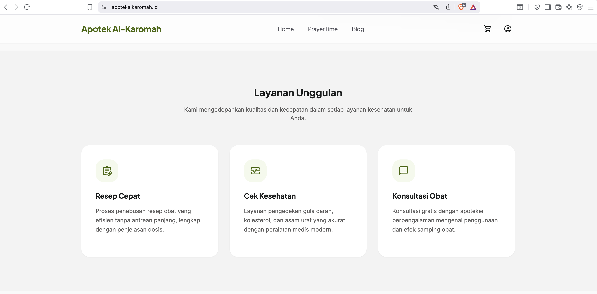
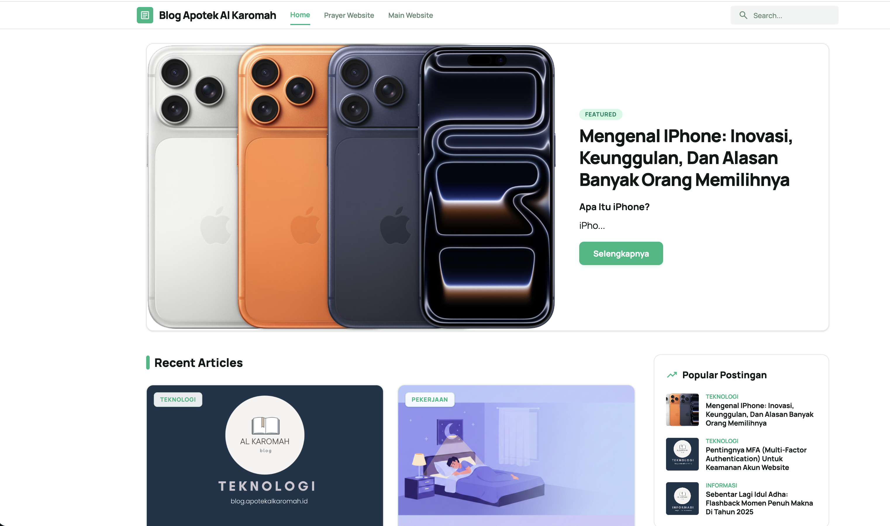
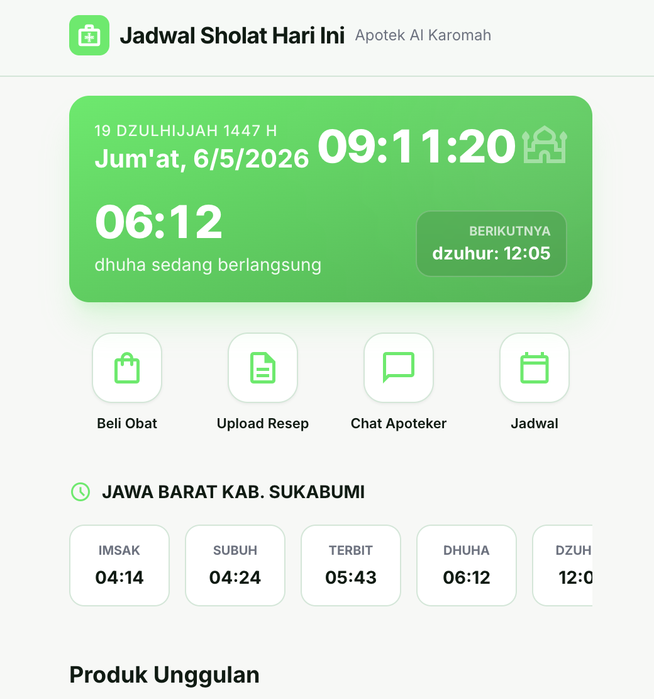
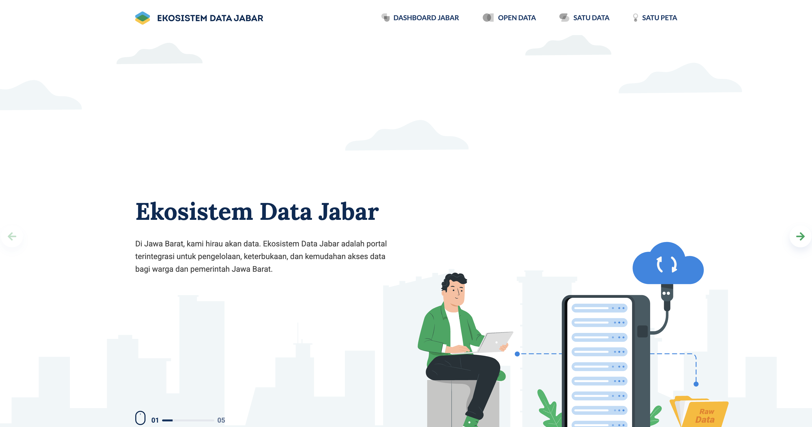
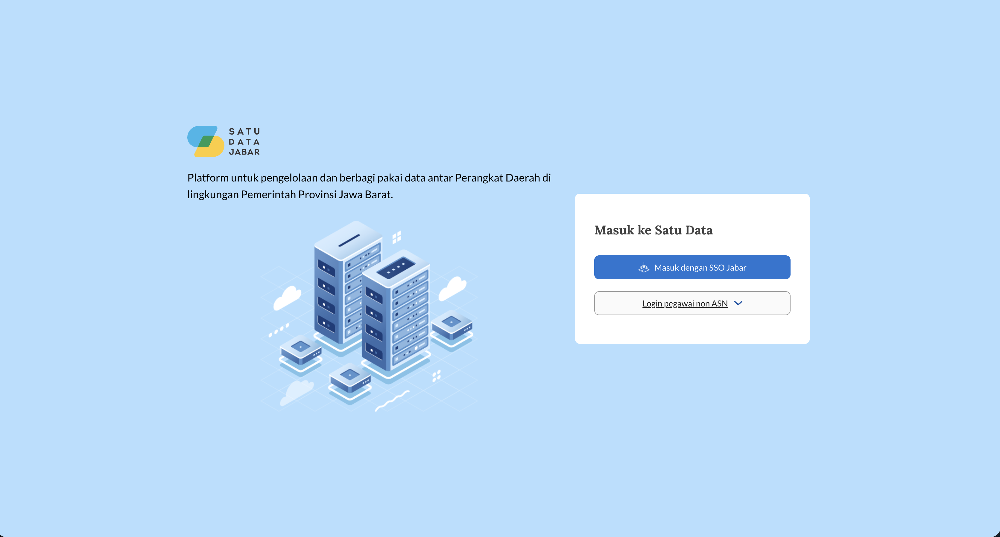
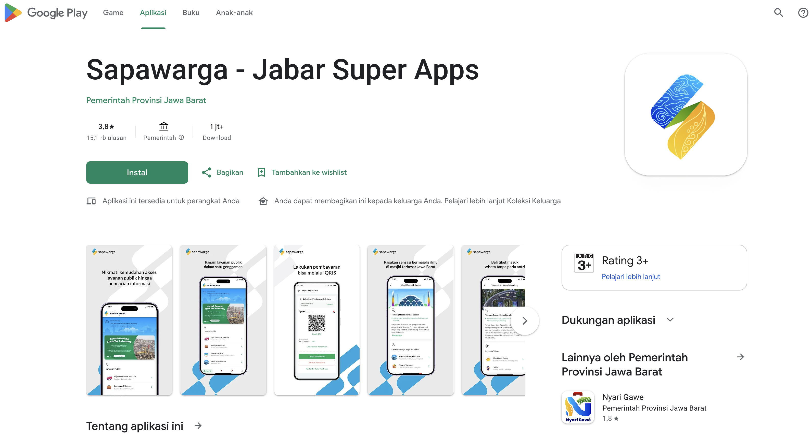

Senior Software Engineer specializing in Backend Engineering with 9+ years of experience designing and delivering scalable, high-performance, and mission-critical systems. Proven expertise in building distributed architectures, microservices ecosystems, and cloud-native applications that serve large-scale business operations with reliability and efficiency. My core strengths include backend architecture design, RESTful API development, system optimization, observability, security, and performance tuning. I have extensive experience working with PHP, Node.js (Express.js, Fastify, NestJS), Python (Flask, FastAPI), and Go, enabling me to choose the right technology for each business challenge. Passionate about engineering excellence, I focus on building maintainable systems, improving developer productivity, and delivering resilient solutions that scale seamlessly under high traffic and demanding workloads.
Principal Engineer (Backend)
Technologies: PHP, Mysql, Git, Jenkins, Postgresql, Docker, Node.js, Fastify, ExpressJs, AWS.
Jobdesk:
Senior Software Engineer (Backend)
Technologies: PHP, Mysql, Git, Jenkins, Postgresql, Docker, Python, Node.js, HapiJs, ExpressJs, Flask, AWS.
Jobdesk:
Fullstack Web Developer
Technologies:PHP, Mysql, Oracle, Html, Css, Javascript, Jquery, Bootstrap, Codeigniter, Laravel.
Jobdesk:
Fullstack Web Developer
Technologies: PHP, Git, Mysql, Html, Css, Javascript, Jquery, Bootstrap, Codeigniter.
Jobdesk:
University of Muhammadiyah Sukabumi
Bachelor's Degree in Computer Engineering, 2012 – 2016
Testing Tools
Programming Languages
Database
Other
DevOps Tools

Company profile website with product showcase and contact information.

Personal blog for sharing technical insights and tutorials.

Web application for displaying prayer times in various locations.

Website to manage and display ecosystem data in West Java Province.

Platform for managing and sharing data between Regional Devices within the West Java Provincial Government.

Integrated digital public service application in West Java.
Website Auction management system for managing online auctions and bidding.
Website for managing online insurance policies and claims.